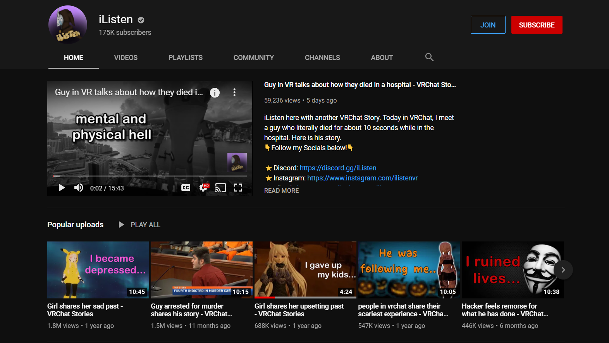

In the age of global pandemic, our identity and presence in the virtual world became more important than any other times in human history. While physically meeting people is prohibited to some extent in many places, the community-based virtual games such as VRchat and Second Life flourished and provided spaces where immersive online interactions happen. The users of both games created relationships with the other users with whom they can share their emotions and memories. Experiencing the two games myself, I investigated the elements in the game contributing to enhance user engagement and narrow the gap between the two realities. Following the investigation, I discuss how virtual spaces can be designed borrowing the architecture and sonic experience from reality to trigger certain interactions and actions. Depending on the system and the architecture in the game, the games do not remain only on screens, it continuously affects the reality and is, again, affected by it. Therefore, I empathise the importance of having this awareness as a creator.
The inventor of the Web, Tim Berners-Lee says “There was a time when people felt that the Internet was another world, but now they realise it's a tool we use in this one.”
1
.
Although virtual communication and exchange of information have always been an essential part of human lives since the invention of the web, having an online identity has been playing a very important role especially in the era of worldwide pandemic where seeing each other in a physical space is institutionally prohibited. We live in the era of having to do at least one video call every day with friends, family members and colleagues to keep the social stimulation and communication up-to-date. Technology has been further developed that facial recognition became possible in real-time. So, even having face filters on these video calls is normalised. We can have anything on our face; a beauty mask to cover pimples, a funny super hero, a person with three eyes, or even the ability to pretend to be on the sunny beach in Hawaii. How we perceive the world and each other depends on what we see on the screen. With a VR goggle, we can even experience this seamlessly compared to real life.
Therefore, virtual identity became much more important than ever before. Especially for the younger generations, it is very common to use large social media platforms like Instagram, Facebook, and TikTok day-to-day with their peers as a form of communication. For them, not having an existence online almost means not being able to be socially involved.
Having this shift of online communication as a mandatory activity not only a choice, the user-based virtual reality social platforms flourished. There are the two main virtual games which have histories with extensive user activities and user participation for its development. They are VRchat and Second Life. In this thesis, I started with curiosity to know more about these two games. Expecting to experience completely new worlds, I played the two successful virtual video games myself. I made interactions in the space, talked with the users, and explored the logic. After some time investigating the experience, I discovered that the spatial, architectural, and the sonic aspect of the games are very much similar to our reality itself.
Considering this information, I explored more in depth how and why that’s one of the reasons users engage, feel attached, and even get confused in the game by blurring the lines between reality and virtuality.
1 Downes, P. K. “An Introduction to the Internet.” British Dental Journal, vol. 202, no. 5, 2007, doi:10.1038/bdj.2007.173.
In April 2020, when the COVID-19 pandemic hit the world, the famous online virtual reality game ‘VRchat’ brought a lot of its users online.
2
VRchat is a free, Windows operating system based community game, which has a large amount of user-made worlds anyone can explore. It enables users to play with a VR headset for motion tracking and to communicate with other users in an avatar. In this chapter, I play VRchat going in and out to different rooms and communicate with other users to see how the experience is different, or similar to real life.

I’ve been watching many gameplay videos from just wandering around in different places to have very personal conversations with complete strangers. User ID iListen on Youtube uploads videos of VRchat gameplay regularly. Majority of his videos are about very personal stories he hears from people who he meets in the game. Alongside 144k followers, millions of viewers listen to these intimate stories that he shares. Not only iListen, but also quite lots of YouTubers share this sort of videos and it often attracts a large amount of viewers.
What fascinated me the most here was how individuals can be extremely open to people who they have never met in real life and bring up their childhood scars, family issues, and mental struggles in this VRchat world. I wondered how people can feel safe as much as to be able to share their vulnerable stories in the virtual space. How did the people decide to extensively expand their social environment to the VR space? What makes the VR communities flourish? With the excitement, curiosity, and a VR goggle, I decided to jump into the game.
2 Lang, Ben. “Social VR App 'VRChat' Is Seeing Record Usage Amidst the Pandemic.” Road to VR, 22 Apr. 2020, www.roadtovr.com/vrchat-record-users-coronavirus/.